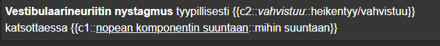

Kappale 3 Kortit itse
Käydään seuraavaksi läpi, millainen on tyypillinen Ranki-tyylinen kortti ja miten sellaisen luo.
3.1 Korttipohja
Korttipohjana toimii lähes aina AnKing (Overhaul), joka sinulla on todennäköisesti käytössäsi, jos olet ladannut Rankin tai AnKingin. Se koostuu monesta eri kentästä, joista tärkeimmät ovat:
- Text: Tähän tulee kysyttävä asia ja cloze itsessään
- Extra: Tähän tulee tarkempaa selitystä aiheesta. Usein voi joko selittää yleisesti aiheesta tai sitten antaa tarkemman selityksen kortin kysymyksestä, että miksi vastaus on niin kuin se on. Näitä molempia kannattaa myös sekoittaa eli extra-kentän yläosassa voi olla kohdistettu selitys/avaus ja alempana yleisesti aiheesta laajemmin.
- Lecture Notes: Tähän kenttään luentodioista screenshotit vähintään siltä laajuudelta kuin kortissa kysytään. Aina ei ole sopivaa diaa, kun kysyy kysymyksen diojen ulkopuolelta. Tässä tapauksessa voi laittaa aiheen ympäriltä dioja kenttään. Helppo tapa jäsennellä Lecture Notes -kenttä on siten, että ottaa screenshotit kaikista aiheeseen liittyvistä dioista ja laittaa ne kaikki aina aiheen korttien alle (välillä voi nostaa joitain kuvia ylemmäs kentässä, jotta ne näkyvät helpommin kortin opiskelijalle).
- Additional Resources: Tänne mitä tahansa kuvia, jotka eivät joko mahdu extra-kenttään järkevästi tai vain haluat laittaa korttiin jonnekin säilöön.
- Sketchy, Sketchy 2 ja Sketchy Extra: Jos tekee kortteja Sketchy-videoiden pohjalta tai jos aihetta käsittelee Sketchy-video niin tänne kuvat sopivista kohdista (ja perään aina loppukuva, jossa kuva täydellisenä). Sketchy = Step1-materiaali (preklinikka), Sketchy2 = Step2 (klinikka) ja Sketchy Extra = Vanhoille videoille, jos aiheesta on sen korvaava uudempi video jo Sketchy- tai Sketchy2-fieldissä.
3.2 Typografinen painottaminen
Ranki-korteissa on aina sanoja joko painotettuna, kursivoituna tai alleviivattuna. Text-fieldissä tämä on tärkeintä, koska oikein sommiteltu teksti nopeuttaa kortin lukemista ja siten nopeuttaa korttien läpikäymistä ja täten säästää paljon opiskelijoiden aikaa. Logiikkani sille, miten käytän näitä kolmea vaihtoehtoa on pähkinänkuoressa seuraava:
- Boldaus: Se sana, johon haluat lukijan silmät menevän ensimmäisenä
- Alleviivaus: Seuraavaksi tärkein sana
- Kursivointi: Vähiten tärkeä
Aina ei ole ehkä näin simppeliä, mutta tällä ajattelumallilla pääsee pitkälle. Kun kortit ovat vakioituun tapaan sommiteltu, niin kortteja läpikäydessä voi nopeasti silmäillä kortteja ja koko lausetta lukematta saada käsityksen kysymyksestä ja siten nopeuttaa korttien läpikäymistä massiivisesti.
- Esimerkki: Menieren tautiin halutan silmät ensimmäiseksi, koska kortti käsittelee sitä ja halutaan heti viestiä, että “Hei, nyt puhutaan Menieren taudista eikä mistään muusta”. Sitten on makukysymys, haluaako korostaa enemmän hoitoa vai akuuttivaihetta, mutta molemmat boldataan ja tässä olen kororstanut enemmän akuuttivaihetta (tämän takia valinnut alleviivauksen), koska on toisia kortteja, joissa taas kysytään enemmänkin rauhallisen vaiheen hoidosta kohtausten eston suhteen.

Huom! Väärin asetetut korostukset voivat pahimmassa tapauksessa tehdä kortista käyttökelvottoman.
- Älä boldaa clozen aaltosulkeita, kaksoispisteitä tai mitään muita cloze-merkintöjä kuin vain itse clozen sisäisen sanan/lauseen. Jos esim. kursivoi vain yhden aaltosulkeen, niin clozea ei enää tunnisteta. Jos kursivoi koko cloze rakenteen, niin se voi muuttaa koko kentän tekstin kursivoiduksi. Korosta siis vain clozen sisällä oleva kysyttävä asia. Aina sitäkään ei tarvitse korostaa, jos kortissa on yksi cloze (tai saman clozenumeron alla monta clozea), koska et tule muuten lukemaan clozen sisäistä tekstiä kuin vain kortin kääntöpuolella (jolloin se on vastauksen tapaan korostettu eri tavalla kuin muut korostukset).
- Huomaa esimerkissä, että vain kysytty sana on alleviivattu/kursivoitu eikä mitään muuta osaa. Vinkkejä clozeille voi antaa esimerkin tapaan ::???? -tyylillä.
